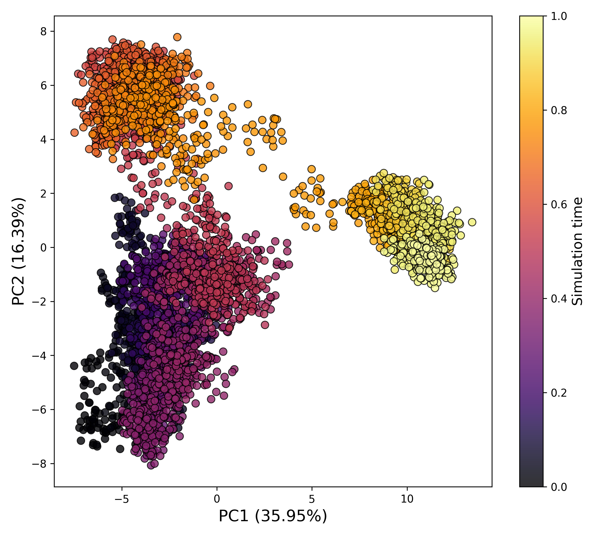

Principal Component Analysis
Overview
DynamiSpectra offers a robust and versatile analytical framework for performing principal component analysis (PCA) on molecular dynamics simulation data. Utilizing input in standardized .xvg file format, this module enables researchers to identify and characterize the dominant collective motions and conformational fluctuations of biomolecular systems.
Command line in GROMACS to generate .xvg files for the analysis:
gmx covar -f Simulation.xtc -s Simulation.tpr -o eingenvalues.xvg -v eingenvectors.trr -av average.pdb
gmx anaeig -v eingenvectors.trr -f Simulation.xtc -s Simulation.tpr -first 1 -last 2 -2d 2dproj.xvg
Note: PCA analysis requires the eigenvalues.xvg and 2dproj.xvg files.
def pca_analysis(pca_file_path, eigenval_path, output_folder,
title="PCA", figsize=(7, 6), cmap="viridis",
point_size=30, alpha=0.8):
{kind=link}

How to interpret: This plot illustrates the temporal or spatial distribution of motion projected along selected principal components (PCs). The first few PCs generally capture the most significant large-scale motions within the system. Dense clustering of data points may indicate stable conformational states, whereas more dispersed distributions suggest increased structural variability or transitions between different dynamic regimes.
Complete code
import numpy as np
import matplotlib.pyplot as plt
import os
def read_xvg(file_path):
"""
Reads PCA projection data from a .xvg file.
Parameters:
-----------
file_path : str
Path to the .xvg file.
Returns:
--------
data : numpy.ndarray
Array with PC1 and PC2 values.
"""
data = []
with open(file_path, "r") as file:
for line in file:
# Skip comment and metadata lines
if not line.startswith(("#", "@")):
values = line.split()
data.append([float(values[0]), float(values[1])])
return np.array(data)
def read_eigenvalues(file_path):
"""
Reads eigenvalues from a .xvg file.
Parameters:
-----------
file_path : str
Path to the eigenvalues .xvg file.
Returns:
--------
eigenvalues : numpy.ndarray
Array of eigenvalues.
"""
eigenvalues = []
with open(file_path, "r") as file:
for line in file:
# Skip comment and metadata lines
if not line.startswith(("#", "@")):
eigenvalues.append(float(line.split()[1]))
return np.array(eigenvalues)
def plot_pca(pca_data, eigenvalues, output_folder, title="PCA",
figsize=(7, 6), cmap="viridis", point_size=30, alpha=0.8):
"""
Generates a PCA scatter plot with customization options.
Parameters:
-----------
pca_data : numpy.ndarray
Array with PC1 and PC2 values.
eigenvalues : numpy.ndarray
Array of eigenvalues.
output_folder : str
Folder to save the output figure.
title : str
Title of the plot.
figsize : tuple
Size of the figure (width, height).
cmap : str
Color map for scatter points.
point_size : int or float
Size of the scatter points.
alpha : float
Transparency of the points (0 to 1).
"""
total_variance = np.sum(eigenvalues)
pc1_var = (eigenvalues[0] / total_variance) * 100
pc2_var = (eigenvalues[1] / total_variance) * 100
plt.figure(figsize=figsize)
scatter = plt.scatter(
pca_data[:, 0], pca_data[:, 1],
c=np.linspace(0, 1, len(pca_data)), # Color by simulation time
cmap=cmap,
s=point_size,
alpha=alpha,
edgecolors='k',
linewidths=0.8
)
plt.xlabel(f"PC1 ({pc1_var:.2f}%)", fontsize=12)
plt.ylabel(f"PC2 ({pc2_var:.2f}%)", fontsize=12)
plt.title(title, fontsize=14)
plt.colorbar(scatter, label="Simulation time")
plt.grid(False)
plt.tight_layout()
# Create the output folder if it does not exist
os.makedirs(output_folder, exist_ok=True)
# Save the figure in high resolution
plt.savefig(os.path.join(output_folder, 'pca_plot.png'), dpi=300)
plt.show()
def pca_analysis(pca_file_path, eigenval_path, output_folder,
title="PCA", figsize=(7, 6), cmap="viridis",
point_size=30, alpha=0.8):
"""
Runs PCA analysis and generates the scatter plot.
Parameters:
-----------
pca_file_path : str
Path to the PCA projection file (usually 'pca_proj.xvg').
eigenval_path : str
Path to the eigenvalues file (usually 'eigenval.xvg').
output_folder : str
Folder to save the output plot.
title : str
Plot title.
figsize : tuple
Size of the figure.
cmap : str
Colormap for the scatter plot.
point_size : int or float
Size of scatter points.
alpha : float
Transparency of scatter points.
"""
pca_data = read_xvg(pca_file_path)
eigenvalues = read_eigenvalues(eigenval_path)
plot_pca(pca_data, eigenvalues, output_folder, title, figsize, cmap, point_size, alpha)